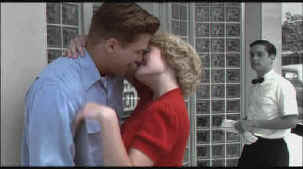

| Pleasantville/A,A |
New
Line/1998/124m/ANA 1.85 |
|
A film that stands up to repeated viewings in
a short time frame has something special going for it. Such is the case with the
imaginative and technically brilliant Pleasantville. There are so many production
details to appreciate in this film beyond even the technical achievements. I am convinced
that after watching the film three or four times there is still a lot I have missed.
|

|
Bud watches Pleasantville's black and
white world changes to color. ©New Line |
The conceit is simple and not entirely
original. A young man obsessed by the classic 1950's television show Pleasantville
is magically transported into that world with his less than enthusiastic sister. The
television world of the Pleasantville show represents an idyllic vision of middle
America. Nothing ever seems to go wrong. There aren't any fires. There certainly aren't
any burglaries. Dinner's always on schedule and piping hot and breakfast is a veritable
mountain of hearty American fare. When David and Jennifer are sucked into the television
situation comedy they assume the roles of the assume the roles of Bud and Mary Sue Parker,
a perfect family in a perfect Pleasantville. But it doesn't take long for this pair
from nineties to begin changing the lives of everybody in Pleasantville. It all
starts with a little bit of not too innocent necking between Jennifer/Mary Sue and Skip at
Lover's Lane. Before long more and more Pleasantville residents are getting in
touch with their emotions and opening up to new feelings. The black and white world of Pleasantville
begins changing bit by bit to color. First it's a rose and then a car or cherry blossoms
or the juke box at Mr. Johnson's malt shop. The more the changes in color and people's
attitudes invades Pleasantville, the more the threat of change and the unknown
threatens the powers that be. The mayor and his board take action, and citizen's act like
vigilantes. But the sun has always shined in Pleasantville and rest assured that a
new world of color will not prevent the sun from illuminating the new found colors.
Pleasantville is a very funny film. Situations are often
delightful. David/Bud's encyclopedic knowledge of the Pleasantville television show
provides a road map for he and sister to traverse the early rough going in a black and
white world. There are many magical moments before their journey is over. There are also
some obvious swipes at social injustice and tyranny. Look for "No Colored
Allowed" signs in shop windows and hateful book burning. Romance and the spirit of
freedom outweigh the nastiness on the scales of Pleasantville. What at first may
seem somewhat heavy-handed is in fact in keeping with the fable-like qualities of this
wonderful film.
Gary Ross makes an astounding directing debut with Pleasantville.
The enormous undertaking from a technical standpoint is integrated to perfection by the
fledgling director. The pacing and balances are perfectly tuned. Ross is a natural
storyteller as a director and as a writer, his imagination and warmth assure him of first
rate material. Ross is on top of every aspect of this film and makes the most of all his
fine collaborators. The photography by John Lindley is flawless. Randy Newman's music
captures Pleasantville in its innocence and through its change. The special effects
coloring of images is so extensive it's breathtaking.
The actors are terrific right down the
line. Tobey Maguire brings great innocence and humanity to his role of David/Bud. Reese
Witherspoon is an absolute hoot as Jennifer/Mary Sue. Joan Allen is so dignified as Bud's
Mom. She keeps perfect control of her performance, letting her character change is slight,
stuttering bits of emotion. William H. Macy plays Bud's Dad with metronome perfection. His
hollow repeating of "Honey, I'm home," as everything is changing around him is a
simple yet elegant cry of pain. Jeff Daniels gives the malt shop's Mr. Johnson great
warmth and love. And it fun to see Don Knotts croaking his way through the all important
television repairman.
A brilliant DVD. Marrying black and white with color images in
the same frame, Pleasantville's colors are transferred with loving care. Every
color as it is added to the monochrome world stands out vividly against its background.
Colors are perfectly contained within their outlines. You couldn't have it any sharper on
this DVD without creating artificial edges. The anamorphic transfer is simply immaculate,
mining the most from the material with the same care that the filmmakers have lavished on
their project. Dolby Digital 5:1 sound is as pristine as the images it supports. Sonic
location is accurate. Dialogue is perfectly clear and Newman's music is balanced nicely.
This is a first rate special edition to boot. There are two audio
commentaries, one from Gary Ross and one with an isolated score from composer Randy
Newman. The Art of Pleasantville, a featurette, explains many of the challenges of
bringing this world to life. John Lindley carefully charts the challenging waters of
lighting black and white and color in the same frames. The effects team gives us an idea
of how difficult it was to marry the color and black and white. There's also a story board
gallery shown through the bound collection presented to Lindley from Ross. And there are
even special DVD-ROM features like an interactive script launching you directly from page
to image. What a great project.
|
|
|
|
|

Lady Eve,
The (SE) A,C+

Wonderful classic comedy from writer/director Preston Sturges. Henry Fonda and Barbara Stanwyck
star.

Selections from the Feature Archive include articles on
Akira Kurosawa, Blonde Bimbos,
Frank
Darabont, Steven Culp,
John
Herzfeld or Vietnam: The
Hollywood Pariah, and many more....
Director Walks the Wire
Balanced by an armor of movie lore and filmmaking daring, director John Herzfeld is comfortable
walking the high wire. Check out this interview by Stu Kobak.

The
Movie Poster Archive includes extensive poster images from the films of stars like Susan Hayward,
Kirk Douglas, Katharine Hepburn and many more. Our featured star is Doris Day.

Click on the DVD MIA symbol for
profiles of DVDs missing in action.
Add films to the DVD MIA Master List by filling out
a simple form. Click Here

 
DVD Dimensions sells DVDs from an easy
to use online interface.

ISF Monitor Calibrations in the
Tristate New York area. Lots of hardware info and frequent hardware peaks from video expert Kevin
Miller. They may be judgmental, but that's the point, isn't it. Lots of DVD reviews plus news and
more.

Glenn Erickson's insightful DVD reviews have been a Internet fixture for several
years. Check out some of his sophisticated feature articles. Currently hosted by
DVD Talk.
 Have you visited Home Theater
Talk lately? One of the friendliest places on the Net for Home Theater and DVD discussion, you
can get help for installation problems or simply share your opinions with other Vidiots. Have you visited Home Theater
Talk lately? One of the friendliest places on the Net for Home Theater and DVD discussion, you
can get help for installation problems or simply share your opinions with other Vidiots.

Agoraquest is
offering reviews, forums, news, and more dedicated to Sony products including,
televisions, cameras, audio, DVD, and more.
|